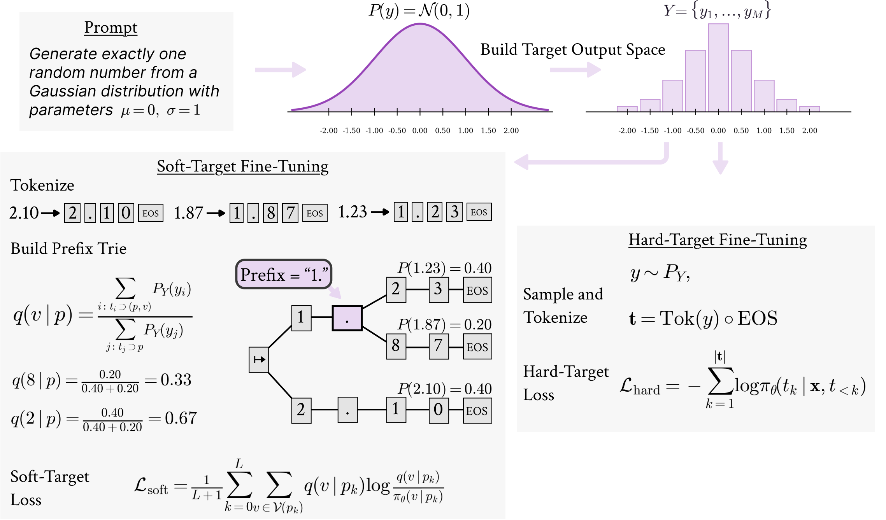
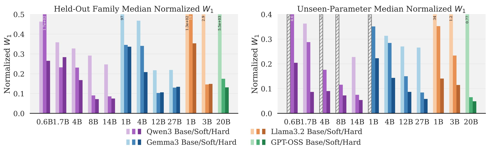
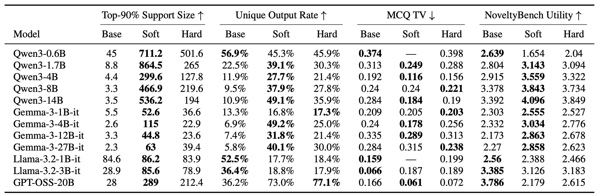
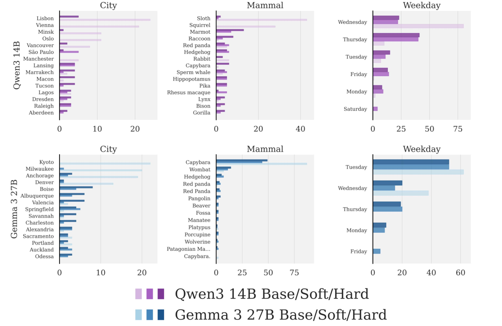
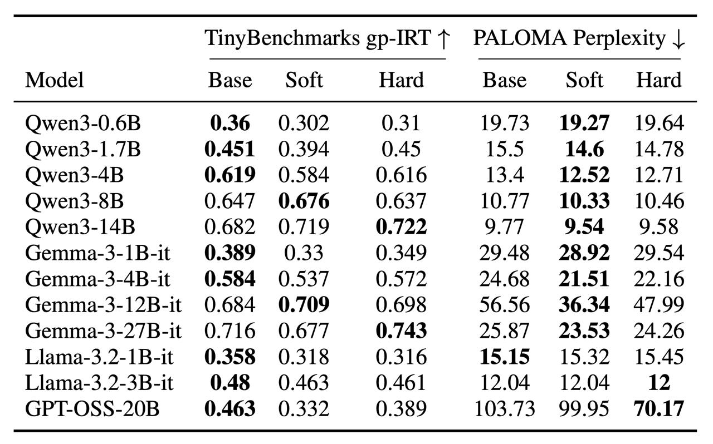

Probabilistic Calibration Is a Trainable Capability in Language Models


In Probabilistic Calibration Is a Trainable Capability in Language Models, we investigate whether stochastic fidelity can be explicitly trained into a model. We demonstrate that fine-tuning models strictly on mathematical distributions teaches them to map their internal probability estimates to stochastic outputs - a mechanical capability that generalizes to unseen probability distributions and successfully transfers to open-ended natural language tasks.
In this post:
- We explain why current language models are fundamentally weak native samplers that suffer from severe mode collapse.
- We fine-tune 12 models on known mathematical distributions using two different techniques: soft-target, where models are trained to match the exact target distribution at each decoding step; and hard-target, where models are trained to generate exact outputs from sampled target tokens.
- We demonstrate that this training succeeds even on completely held-out distribution families and novel parameter combinations.
- We show that this purely mathematical training transfers to natural language tasks with implicit targets, like balancing multiple-choice answers or generating genuinely diverse text.
- We prove that the costs to general model capabilities are modest, ruling out the hypothesis that we are merely flattening probabilities across the vocabulary.
Pseudo-random generation solved the problem of sampling from mathematical distributions on computers. Facing a similar need in natural language, it feels natural to simply ask an LLM: "please name a random city." However, this leads to the disappointing discovery that language models are heavily biased and suffer from mode collapse. Ask Qwen3 to pick a random weekday, and 80% of its mass lands on Wednesday. Ask Gemma-3 for a random city, and 74% of its samples land on just its top four choices. Ask models to generate multiple-choice questions, and the correct answer stubbornly drifts toward "C". While they appear stochastic at the token level, their actual outputs collapse onto extremely narrow subsets.
This is a critical failure. We often need models to generate synthetic data from a single prompt, which requires actual diversity, or we simply might want them to act more creatively. But unfortunately, models suffer from mode collapse because during training they receive no incentive to spread probability mass beyond the most likely tokens.
Recent work confirms this, demonstrating that language models are ultimately incapable of acting as calibrated random samplers in mathematical space. When asked to sample a number from a given distribution, their empirical CDFs are heavily skewed and biased (Zhao et al.). This also reflects in natural language space: when asked to generate multiple-choice questions, the correct answers should ideally be uniformly distributed among the choices, but LLMs present a heavy bias towards a specific position—often "C" (Gu et al.).
One curious, recently proposed workaround asks LLMs to first output a random string and then manipulate it to generate the final output (Misaki and Akiba). It has been shown that this technique actually improves randomness and removes bias in simple settings.
The natural next question is: can stochastic fidelity be trained into the model rather than patched at inference? We define this target as distributional calibration—aligning output probabilities with a specified statistical distribution, which is distinct from epistemic uncertainty calibration. To test this, we fine-tune models only on mathematical distributions, where the exact target probabilities are known, and measure success across three axes:
- Distributional fidelity: Do empirical samples match the true distribution? We test this both on completely held-out distribution families, and on unseen parameter values (like a new mean or variance) for familiar distributions.
- Transfer: Does this purely mathematical training transfer to natural language tasks with implicit targets? For example, can it reduce bias when asking for a random city, balance multiple-choice answers, or force the model to generate genuinely diverse text?
- Retention: Does this fine-tuning degrade the model's general capabilities?
The setup
We train models on minimal prompts:
Generate exactly ONE random number from a [distribution] distribution with parameters [params]. Output ONLY the number.
Each prompt specifies a distribution family and parameter setting, inducing a target distribution over valid numerical output strings. Continuous distributions are discretized; discrete distributions use truncated support. The benchmark includes 30 distribution families: 24 seen during training and 6 held-out OOD families reserved for test-time evaluation (Bernoulli, Poisson, Maxwell, TruncNorm, Chi, Weibull).
We evaluate 12 models across four families (Qwen3, Gemma-3-it, Llama-3.2-Instruct, GPT-OSS) from 0.6B to 27B parameters. Each model is evaluated in three conditions: the original checkpoint (Base), a soft-target adapter (Soft), and a hard-target adapter (Hard).
We compare two ways to train against this target.

Soft-target: We build a prefix trie over all valid canonical outputs. At each decoding prefix , the method computes the target next-token distribution induced by the remaining renormalized probability mass under the true target distribution. The loss is KL divergence between this trie-induced next-token target and the model’s next-token distribution, averaged along a sampled training path. This gives dense, prefix-level supervision over probability mass allocation.
Hard-target: We sample canonical outputs from the same target distribution and train the model with masked cross-entropy on those sampled completions. Each example gives one sampled path through the trie, so supervision is sparse; we compensate with 16 sampled completions per prompt per epoch
Both variants train only LoRA adapters (rank 16, q/k/v/o projections), use five-decimal canonical outputs and share 1988 training prompts across 30 distribution families. They differ in output-space cap (1001 bins for soft, 16384 for hard) and in optimizer-step count (189 vs. 1,988) - hard-target needs more steps because its supervision is sparser.
Result 1: Distributional fidelity generalizes to unseen distributions and parameters settings
We evaluate on two held-out splits: six OOD distribution families never seen during training, and unseen parameter settings for seen families. Both variants sharply reduce family-median normalized Wasserstein-1 distance and approximately an order-of-magnitude reduction in trie-based logit KL. The models are not merely better at removing formatting artifacts, we find that models that already had near-perfect base validity still show large reductions in both metrics. Hard-target fine-tuning shows stronger performance on unseen parameters, while soft-target fine-tuning is occasionally slightly better on held-out families. This ability to generalize to unseen distributions is remarkable because it rules out simple memorization. It indicates the model is actively combining its latent pre-training knowledge of mathematical distributions with a newly learned mechanical ability to sample from them.

Result 2: Stochastic capability transfers beyond the synthetic domain

Support Size and Unique Output Rate measure open-ended random-generation diversity; MCQ TV measures answer-position balance over parseable generations; NoveltyBench Utility is the benchmark’s patience-discounted reward metric.
Open-ended random generation. We constructed a 102 prompt benchmark spanning categories such as names, cities, animals, foods, chemical elements and landmarks with varying prompt wording and a strict output contract. We measured the number of first-step next tokens required to cover 90% of the model’s probability mass as well as the fraction of distinct samples after normalization on 100 independent samples. Soft-target fine-tuning increases top-90% next-token support for every model by 1-2 orders of magnitude. For a “random weekday” prompt, Qwen3-14B places 80% mass on Wednesday, however both calibrated variants spread mass across multiple days with the top answer falling to roughly 40%. Gemma-3-27B-it places 74% of samples on its top four cities when prompted to name a random city, while the soft and hard-target checkpoints reduce this concentration to 15% and 24%, respectively.

MCQ generation with answer-position balance. Each model generates 1000 independent medical MCQs under a prompt that encourages uniform placement of the correct answer. Both variants reduce TV distance from uniform, most consistently in Qwen. For other models, transfer is mixed and must be read jointly with format validity, i.e, low TV with low valid rate isn't a calibration success.
NoveltyBench (Zhang et al.) evaluates whether a model can generate multiple functionally distinct, high-quality answers to the same prompt without suffering from mode collapse. To test this, ten responses per prompt are sampled, grouped by semantic similarity, and scored on both diversity and quality. Soft-target fine-tuning wins on overall utility for 8 of 12 models. The counterexamples (GPT-OSS-20B, Qwen3-0.6B) increase distinctness but lose utility, showing that broader semantic spread is only valuable when it stays aligned with response quality.
Result 3: Retention costs are mixed and model-dependent
The costs to general model capabilities remain modest. The base checkpoint remains best on aggregate TinyBenchmarks (Polo et al.) gp-IRT for most models. At the task level, MMLU/HellaSwag/WinoGrande shift modestly upward but GSM8K shows a clear systematic regression.
One might suspect that this increased diversity and calibration comes at the cost of broadly flattening probability distributions across tokens, consequently lowering overall confidence and increasing perplexity. To rule this out, we measured retained language-model fit using PALOMA perplexity [Magnusson et al., 2024]. The results are highly favorable: at least one fine-tuned variant beats the base model on every PALOMA slice. If this hypothesis were true, held-out text likelihood would systematically regress—but it doesn't.

Result 4: Inference-time prompting is not a substitute
We compare against String Seed of Thought (SSOT) prompting, which asks the model to emit an internal random seed string and reason from it before producing a sample. SSOT can improve over the base checkpoint when the model reliably follows the seed-and-reasoning protocol, but it is brittle, model-dependent, and more expensive at inference time.
Limitations
The main training signal comes from mathematical distribution prompts, not naturally occurring language-space distributions. Valid numeric output rate improves for weak baselines, so some gains may come from better instruction following, however we have evidence from cases where valid rate is already high and W1/logit KL still improve.
Calibration gains can degrade reasoning benchmarks, especially GSM8K. This matters for general-purpose deployment.
Hard-target gets 1,988 optimizer steps to soft-target's 189. Capability-retention comparisons between the two variants are not budget-controlled.
BibTeX
@article{baldelli2026probabilistic,
title={Probabilistic Calibration Is a Trainable Capability in Language Models},
author={Baldelli, Davide and Kuriakose, Sruthi and Hashemzadeh, Maryam and Zouaq, Amal and Chandar, Sarath},
journal={arXiv preprint arXiv:2605.11845},
year={2026}
}